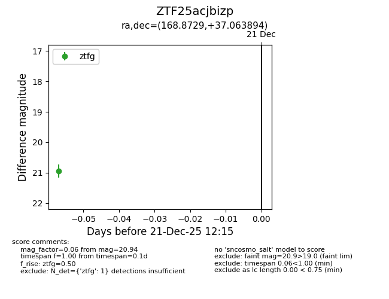
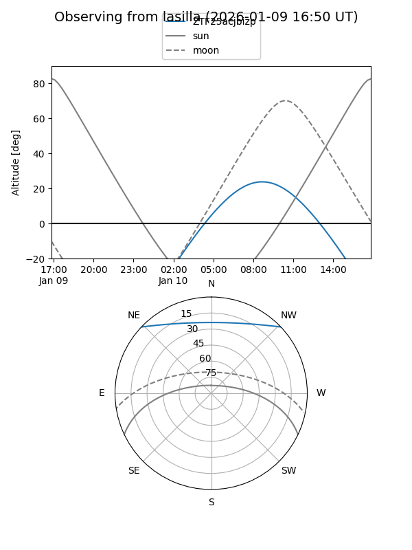
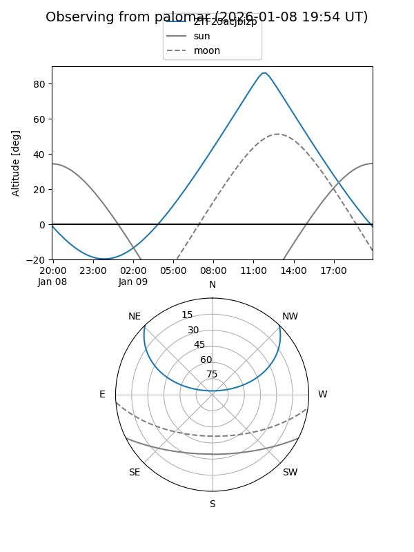

ZTF25acjbizp
Target ZTF25acjbizp at 2025-12-23 12:18
Aliases and brokers:
FINK: fink-portal.org/ZTF25acjbizp
Lasair: lasair-ztf.lsst.ac.uk/objects/ZTF25acjbizp
ALeRCE: alerce.online/object/ZTF25acjbizp
alt names
ZTF25acjbizp (ztf,fink_ztf)
Coordinates:
equatorial (ra, dec) = 168.8729,+37.06389
equatorial (HMS+DMS) = 11:15:29.49,+37:03:50.02
galactic (l, b) = (180.7718,+67.46887)
Flags:
Photometry:
last ztfg=20.94
1 ztfg detections
Lightcurve

Visibility


Additional plots